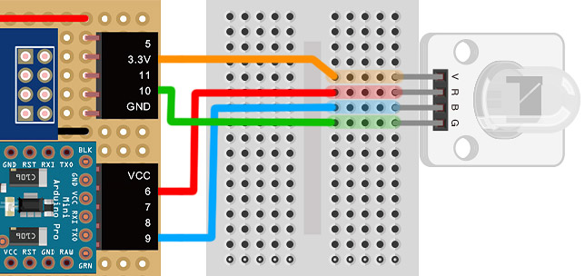
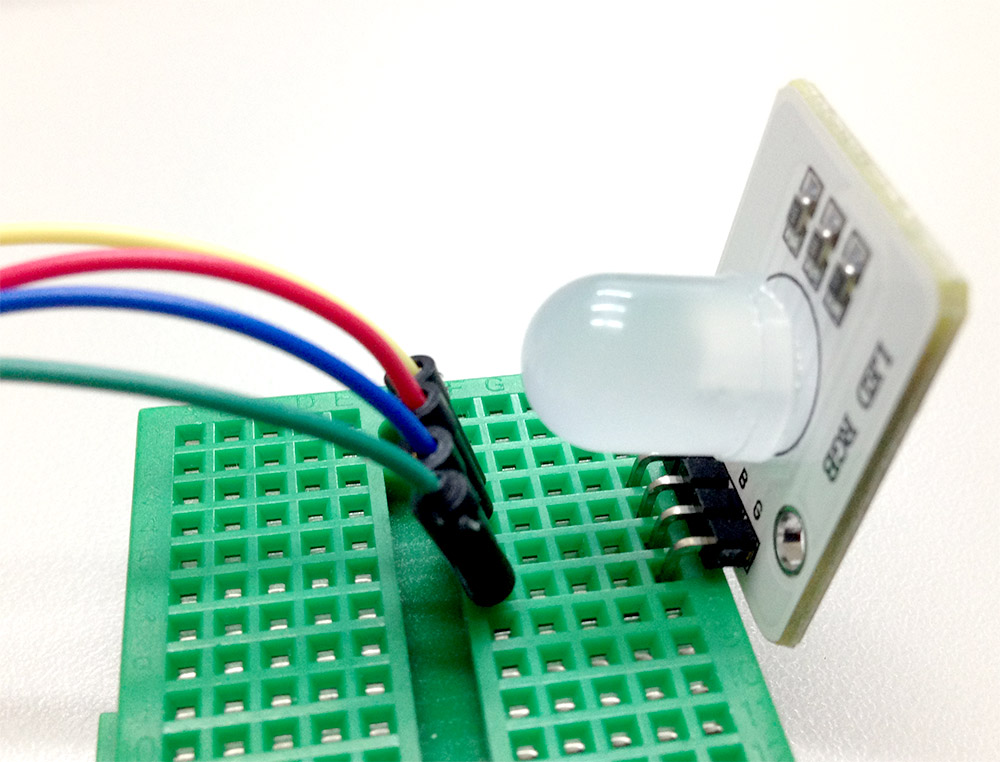
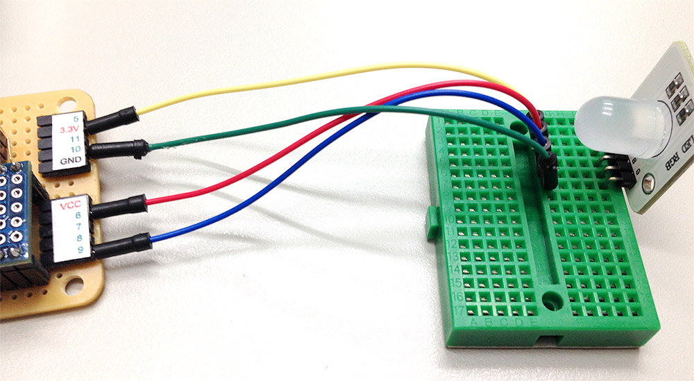
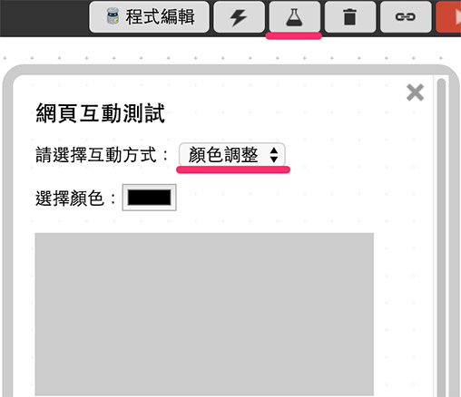

教學範例 4：三色 LED 調色盤
上一篇 介紹過三色 LED 的原理，這篇將利用 HTML5 裏頭新的 input 類型「color」，來控制三色 LED 燈的顏色變換，同時在網頁裡頭對應相同的色彩。( 影片中則是展示使用 input 的「range」類型來切換顏色 )
範例影片展示
影片對應範例：https://blockly.webduino.io/?&page=tutorials/rgbled-3
接線與實作
接線的方式和上一個範例相同，就是將三色 LED 燈接上杜邦線 ( 一公一母 ) ，把 v 接在 3.3v 的位置 ( 避免電壓過高，造成三色 LED 燈會發出微弱的光線 )，R ( 紅色 ) 接在 10，B ( 藍色 ) 接在 6，G ( 綠色 ) 接在 9，如果沒有這些腳位，可以選擇其他有 PWM 的腳位來接 ( 3、5、11 )。
馬克一號接線示意圖：

Fly 接線示意圖：

實際接線照片：


Webduino Blockly 操作解析
打開 Webduino Blockly 編輯工具 ( https://blockly.webduino.io )，因為這個範例也會點選網頁「顏色調整」來控制，所以要先點選右上方「網頁互動測試」的按鈕，打開內嵌測試的網頁，用下拉選單選擇「顏色調整」，就會出現有一個可以選擇顏色的按鈕，和一個顯示顏色的區域，我們待會除了讓三色 LED 燈呈現我們選擇的顏色外，也會把顏色顯示在網頁上。

左側選單同樣選擇「顏色調整」的程式積木，利用這些積木來完成我們要做的行為。

首先把開發板放到編輯畫面裡，填入對應的 Webduino 開發板名稱，開發板內放入三色 LED 的積木，名稱設定為 rgbled，腳位設定為紅色 10，綠色 9，藍色 6，接著放入「選擇顏色後執行」的積木，在裡頭就可以設定區域的顏色，還有三色 LED 燈的顏色。

完成後，確認開發板上線 ( 點選「檢查連線狀態」查詢 )，點選紅色的執行按鈕，就可以利用顏色選取工具，來改變三色 LED 燈的顏色了。 ( 解答：https://blockly.webduino.io/#-K4wrsITVd2C5wsXOLCn )

程式碼解析 ( 完整程式碼、檢查連線狀態 )
HTML 的 header 引入 webduino-all.min.js，目的在讓瀏覽器可以支援 WebComponents 以及 Webduino 所有的元件，如果是用 Blockly 編輯工具產生的程式碼，則要額外引入 webduino-blockly.js。
<script src="https://webduino.io/components/webduino-js/dist/webduino-all.min.js"></script>
<script src="https://webduinoio.github.io/webduino-blockly/webduino-blockly.js"></script>
HTML 的 body 裡頭只有兩個東西，一個是 input 標籤，type 設定為 color，另外一個是呈現顏色的 div。
選擇顏色：<input id="demo-area-04-color" type="color">
<div id="demo-area-04-area"></div>
JavaScript 在這裏就是把選取顏色當下的色彩數值，傳給區域背景色，以及三色 LED 的顏色使用 ( 利用 oninput 的事件行為 )
var rgbled;
boardReady('', function (board) {
board.samplingInterval = 20;
rgbled = getRGBLed(board, 10, 9, 6);
document.getElementById("demo-area-04-color").oninput = function(_color){
_color = this.value;
document.getElementById("demo-area-04-area").style.background = _color;
rgbled.setColor(_color);
};
});
以上就是利用顏色工具，由三色 LED 以及網頁區域，呈現不同顏色的範例。
完整程式碼：http://bin.webduino.io/xajar/edit?html,css,js,output
解答：https://blockly.webduino.io/#-K4wrsITVd2C5wsXOLCn
三色 LED 的延伸教學：
Webduino Blockly 課程 2-3：三色 LED 燈調色盤
Webduino Blockly 課程 2-4：轉吧七彩霓虹燈
如果您還想了解更多，可以參考：
2. Blockly 教學：https://goo.gl/Y8sRkl
3. 產品總覽：https://webduino.io/buy.html
4. 露天賣場：http://goo.gl/0Dj9ip